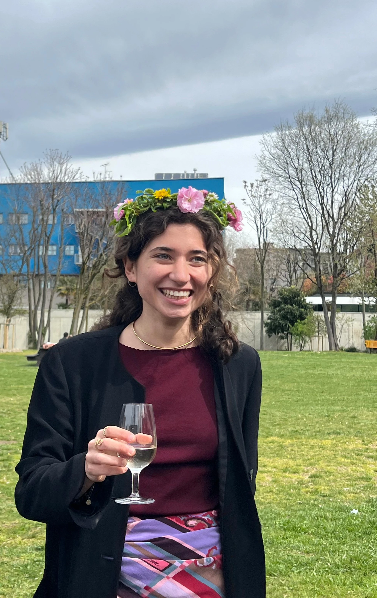

I'm a communication designer with a focus on the material and social dimensions of design. Throughout my journey, I have developed a strong sensitivity to materials and solid hands-on skills, allowing me to translate ideas into tangible and well-crafted solutions. I see design as a collaborative process: working in teams, engaging in dialogue, and building relationships based on listening and trust are central to my approach. I bring precision, a practical mindset, and adaptability, contributing to harmonious and productive working environments.
→ EDUCATION
Politecnico di Milano
MA in Communication Design
Universidade de Lisboa, Faculdade de Arquitetura
Erasmus
Politecnico di Milano
BA in Communication Design
→ EXPERIENCE
Politecnico di Milano
Tutor - Bando 150 ore
Politecnico di Milano
Teaching Assistant at Visual Elements of Design Lab
Politecnico di Milano, DCxW Design Department
Collaborator in creative workshops “Tracce 0.18”